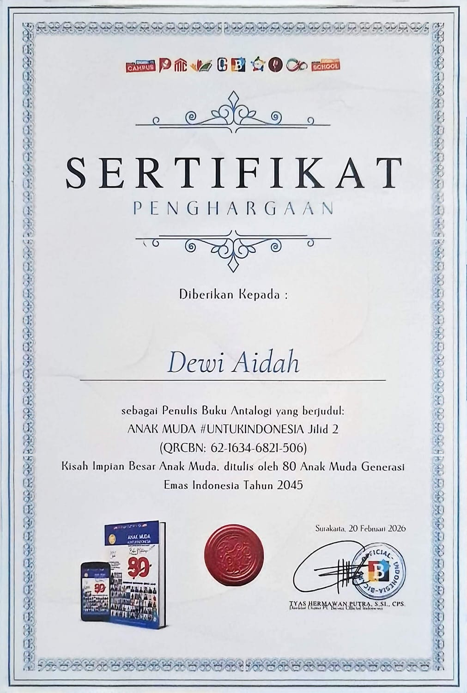

SENIOR HIGH SCHOOL
SMA Negeri 1 Karawang
MIPA
Studied foundational science and logic across four core subjects: mathematics, physics, chemistry, and biology.

Information Systems student at Budi Luhur University with a passion for web development, UI/UX design, and leveraging technology to create beneficial digital solutions.
My educational journey that has shaped my knowledge and skills.
MIPA
Studied foundational science and logic across four core subjects: mathematics, physics, chemistry, and biology.

Information Systems Student
Studying information systems, application development, databases, business process analysis, and user experience.
My organizational experiences, committee work, and contributions that have been part of my journey.

ICT Laboratory Assistant · 2025 - Now
Managed labotary operations and IT infrastructure maintenance, supported practical sessions and tutoring, and contributed to laboratory programs.

Presenter · 2026
Interactive educational project based on gamification that encourages elementary school students to learn about waste management and recycling through fun and educational activities.

Vice Chair · 2023-2025
A theatre extracurricular that develops acting, communication, and collaboration skills through theatre performances and artistic activities.

Division of Academic Achievement and Creative Arts · 2023-2024
Contributed to the development of creative arts and academic achievements within the school environment.
Technologies and skills I use while learning and developing projects.
Collections of my projects, experiments, and digital solutions I have developed throughout my learning journey and professional experiences.
 01
01
A makeup artist booking system with features for reservations, order management, and service information.
View ProjectConfigured basic to intermediate networks using MikroTik RouterBoards, subnetting, and integrating Linux-based network services such as web server (Nginx), Domain Name System (DNS), File Transfer Protocol (FTP), SSH, and databases.
 03
03
E-Reporting System for Violence Against Women and Children.
A collection of certifications, training courses, and achievements throughout my academic and professional journey.

Badan Pengembangan dan Pembinaan Bahasa melalui Kelompok Kepakaran dan Layanan Profesional · Mei 2025
An official certification that assesses Indonesian language proficiency.

MySkill · Juni 2025
A certification assessing foundational Python skillsfor data analysis.

English For Everyone · 2025
An online course to improve upper-intermediate English proficiency.

RevoU · 2025
An Online Course covering the fundamentals of a career in Data Analytics

MySkill · Juni 2025
Training on Microsoft Excel Pivot Tables to develop skills in data summarization, organization, and analysis for more efficient data-driven decision-making.

Nasional Bebras Indonesia · Oktober 2025
A nationwide educator collaboration forum promoting computational literacy among students.

Laboratorium ICT · November 2025
Algorithm training to strengthen logical thinking and problem solving skills in software development.

Bicara Official · Februari 2026
Book Writing Certificate for the Anthology: “YOUTH #FORINDONESIA Volume 2: The Big Dreams of Young People,” written by 80 young Indonesians, the Golden Generation of Indonesia 2045.
CONTACT
Open to exchanging ideas, learning together, and collaborating on meaningful projects.